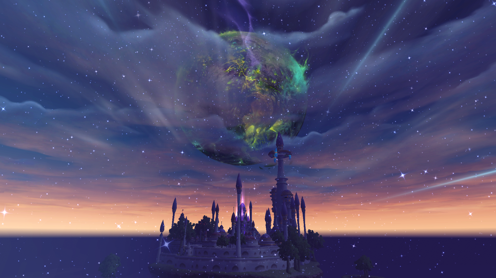
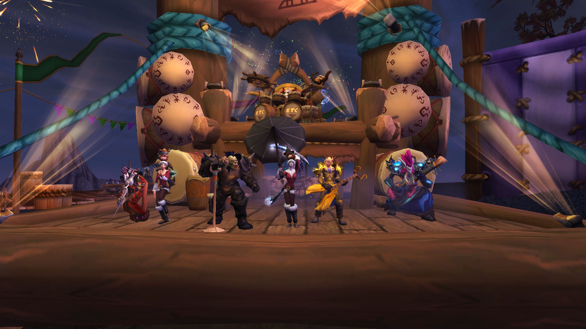

Exploring the vast, treacherous landscapes of Azeroth under the banner of the Horde. From the blood-soaked sands of Kalimdor to the cursed citadels of the North, every capture immortalizes the relentless struggle for survival and glory... or just for the fun of it.
Of course, no journey would be complete without Konina and Maelil dragging their band of trusty (and thoroughly chaotic) alts— Medeva, Biscotaki, Koninaki, Pharaun, Aliisza, Lithic, Bregeth, Steelshadow, Bloodripper, Elil, Voidseeker and Demian — into places they really shouldn't be, just for the laughs.
So sit back and enjoy the glorious struggle of Darkness Within, where every captured moment proves that saving Azeroth is serious business... until it completely isn't. Like jumping from a Stormheim cliff to the ocean near Suramar and landing on the only rock in the water below.
The journey of Konina began way back in 2005, wandering the early realms of Azeroth long before flags were raised and guild banners were reshaped.
Where are the ancient screenshots?
Regrettably, many relics and visual memories from those founding years were lost forever to the chaotic depths of the Twisting Nether.
What remains below are the surviving fragments of our legacy—the guilds, the bonds, and the victories that paved the road to Darkness Within.
When the journey begun?
In the shadowed crypts of Tirisfal Glades, Konina’s tale begins. The eerie silence envelops the crypts where the air is thick with the scent of decay.
The cries of the damned echo throughout.
Konina awoke to a world of shadows, her body twisted into undeath by the necromantic powers of the Lich King. Yet, unlike many who rose as mindless thralls,
her spirit was too strong, too fiery to be fully subjugated. She wandered aimlessly, a specter of her former self, until fate—or perhaps destiny—guided her
to the Dark Lady, Sylvanas Windrunner.
FROM ANCIENT ROOTS TO DARKNESS WITHIN
An eight-year journey spanning multiple guilds and countless raids, yet defined by a lone adventurer’s spirit. From 2007 to 2015—long before Maelil joined the battle—every quest was faced alone, every route farmed in solitude, and every corner of Azeroth explored on my own terms, even while standing under the guild banners of "Prophetia Nocturna", "Horizon", "Xanadu", "Unholy Alliance" and more.
THE TRANSITION FROM LONE WOLF TO DUO
A Shared Destiny Begins: The solitary days of wandering Azeroth came to an end with the arrival of Maelil. What was once a lone adventure transformed overnight into a shared quest—facing new frontiers together and setting the stage for the rise of Darkness Within.
When the journey begun?
Maelil was born in the golden age of Quel’thalas, a time when the high elves took great pride in their mastery of the arcane, their magic pure
and their culture refined. Even as a child, Maelil was less inclined to immerse herself in the vast libraries of magic. Instead, she found solace
in the wilds, where she learned the ways of nature. Her keen eyes and nimble hands quickly made her an exceptional hunter. Her keen senses and
unmatched skill with a bow became legendary. She roamed the forests of Eversong Woods, her marksmanship so precise that it became the stuff of local folklore.
But peace was shattered when the Scourge, led by the treacherous Arthas Menethil, breached the borders of Quel’thalas. Her path eventually crossed with Sylvanas
Windrunner, once the proud Ranger-General of Silvermoon, now the Banshee Queen commanding the Forsaken. It was during this time that Maelil met Konina, an undead
mage whose life had been stolen by Arthas’s horrific campaign.
Their journey had just begun.
The days of wandering Azeroth alone came to an end with the arrival of Maelil. What was once a solo endeavor transformed overnight into a shared adventure. From discovering forgotten paths together to facing new challenges side by side, this chapter marks the birth of a duo—setting the foundation for what would soon become the banner of Darkness Within.
DARKNESS WITHIN
A World Divided, A World Wounded: As the Burning Legion poured through the Tomb of Sargeras, our adventures took us from the Broken Isles to the demon-infested world of Argus. Together under the flag of Darkness Within, we fought through the invasion—culminating in the dramatic moment when Sargeras thrust his titanic blade, Gorribal, deep into the heart of Azeroth itself.
The scars left by the Burning Legion were visible across Azeroth. Instead of healing, the world was driven into a new war fought on the ashes of Teldrassil. Darkness Within answered the call and fought to protect a wounded world from N'Zoth's corruption—while killing a few Alliance scum along the way and blaming it on N'Zoth's madness.
With the sky shattered and the afterlife in chaos, Darkness Within stepped through the veil into the Shadowlands. We navigated infinite soul-grinds, braved the Maw, and put an end to the Jailer—because even in Death, the Horde doesn't take orders from anyone.
As ancient dragons reclaimed their ancestral home, Darkness Within took flight across the Dragon Isles. From high-speed aerial maneuvers to battles against primal elements, this chapter was defined by freedom, exploration, and new heights.
Driven into the heart of the world, we face our most elusive enemy yet. Xal'atath manipulates empires from the shadows, but Darkness Within answers the call deep beneath Azeroth, fighting to sever the Harbinger's grip before the Void consumes everything.
Silvermoon rose in glory, only to be enveloped by Midnight. As the Void compromises the Sunwell and claims heroes like Lady Liadrin,
Darkness Within answers the call to defend Quel'Thalas against the total eclipse of Azeroth.
For Liadrin.
As we prepare to return to Northrend, take a front-row seat alongside Konina and Maelil to uncover an ancient Titan conspiracy and decide the ultimate fate of Azeroth.
Not all battles are remembered, but some moments are etched into history forever. These highlights represent the finest hours of our journey—the impossible clutches, the rarest drops, and the pure joy of conquering Azeroth together.
